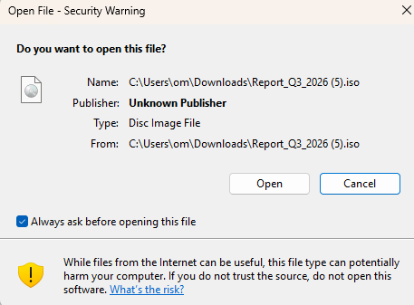

Covert Channel: DNS Exfiltration via DLL Sideloading
Objective: extract a file from a fully-protected Windows 11 computer without triggering security alerts. The only warning was a standard "Open File" dialog when mounting the ISO (shown below), not a security detection. No antivirus flags, no firewall blocks. The stolen data was smuggled out by hiding it inside ordinary DNS requests, the same type of traffic your browser sends every time you visit a website. Every packet below is from the actual lab test.

Only alert triggered
A standard Windows "Open File" dialog when the user opens the downloaded ISO. This is not a security detection. No SmartScreen warning, no Defender alert, no firewall block.
Network topology
The lab setup: two machines on an isolated network. The victim (left) is a fully-patched Windows 11 PC with all security features enabled. The attacker (right) receives the stolen data by listening for DNS requests on port 53, the same port every computer uses to look up website addresses.
Packet timeline
Every dot is a single DNS request captured from the network. Green dots are normal Windows traffic (Bing, Microsoft updates). Red dots are the hidden tunnel carrying stolen file data. Notice the tight burst of red dots around the 17 to 20 second mark. That's the entire file being exfiltrated in about 3 seconds. Higher on the chart = more random-looking = more suspicious. Press play to watch it happen in real time.
Randomness analysis: how defenders catch this
This is the defensive perspective. Normal website names like "www" or "assets" are readable English with low randomness. The tunnel traffic uses encoded data that looks like keyboard mashing ("emqeg33qpfzgsz3i..."), which scores much higher. A security team doesn't need to decode the data. They just measure how random each domain name looks (called Shannon entropy). If it's consistently above ~3.5, something is hiding data in DNS.
~4.0 on the randomness scale vs ~1.8 for normal traffic, more than double. Combined with the fact that every tunnel domain is exactly 45 characters long, they all arrive in rapid 110ms bursts, and none of them ever repeat (normal DNS gets cached and reused), a monitoring tool would flag this within seconds.
Packet inspector
Raw log of every DNS packet from the capture. Red rows are tunnel traffic carrying stolen data. Yellow rows are the END signal sent three times to confirm the transfer completed. The "Entropy" column shows the randomness score for each domain name. Higher values stand out as suspicious.
| # | Time | Dir | Source | Dest | Domain | Type | Randomness |
|---|